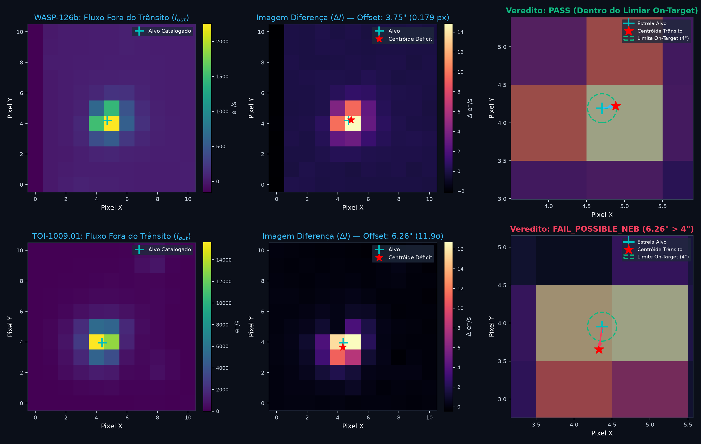

Portal Científico & Dashboard de Exoplanetas
Plataforma aberta para validação estatística, amostragem MCMC/NUTS em GPU, vetting astrométrico sub-pixel e caracterização de massas e estruturas de interiores de candidatos transientes.
Catálogo Físico e Status de Vetting
Dados físicos inferidos via trânsito e velocidade radial. Clique em qualquer coluna para ordenar ou use os filtros.
| Alvo | TIC ID | Período (d) | Raio (R⊕) | Massa (M⊕) | Densidade (g/cm³) | Offset PRF | Status | Diagnósticos |
|---|
Diagrama Interativo Massa-Raio-Densidade
Compare os exoplanetas caracterizados pelo pipeline com as trilhas de equação de estado (EOS) teóricas de Zeng et al. e planetas do Sistema Solar.
Painel Sinóptico da Rodada Inédita
300 DPICurvas de trânsito em fase, vetores astrométricos de centróide e curvas Doppler acopladas dos 3 alvos inéditos processados ponta a ponta.

Diagrama Físico com Trilhas EOS
300 DPIProjeção bidimensional com modelos de alta pressão e densidades iso-volumétricas, ilustrando os regimes de gigantes gasosos e mundos de água.

Benchmark de Astrometria Sub-Pixel & Imagem de Diferença (FITS Reais)
Validação da potência discriminatória do algoritmo vet_target_pixel_file operando diretamente sobre matrizes $11 \times 11$ de pixels reais do TESS.
O déficit de luz da imagem de diferença $\Delta I(x, y)$ coincide com a posição da estrela alvo dentro da abertura permissível. O candidato é aprovado como trânsito planetário autêntico.
A imagem de diferença $\Delta I(x, y)$ detecta que o déficit de luz se afasta da estrela alvo em mais de $6''$, denunciando contaminação por binária eclipsante de fundo (BEB / NEB).

Clique na figura para ampliar em alta resolução (160 DPI)Execução Rápida via Linha de Comando (CLI Final v1.0.0)
O Astro-Exo é distribuído como pacote Python empacotado segundo PEP 517/621 e disponibiliza os seguintes comandos:
astro-exo smoke
astro-exo joint-rv --demo
astro-exo dashboard --open